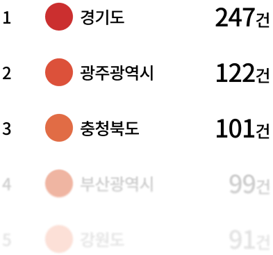

매년 증가하는 지반 침하, 한국의 싱크홀
최근 몇 년간 한국에서는 지하 개발 증가와 노후 인프라 문제로 인해 도심 지역을 중심으로 싱크홀 발생이 꾸준히 보고되고 있습니다. 특히 서울, 대전, 인천 등에서는 도로와 보도에서 지반이 갑자기 꺼지는 사례가 반복적으로 발생하고 있으며, 2020년부터 2023년 사이 서울에서만 300건이 넘는 지반 침하 사고가 접수되었습니다. 이는 노후 상하수도관, 지하수 유출, 부실 시공 등 다양한 요인이 복합적으로 작용한 결과로, 생활 공간 가까이에서 일어날 수 있는 실질적인 도시 안전 문제로 주목받고 있습니다.
지자체별 현황



월별 현황


+594%
원인별 현황
5.6%
상수관 손상
상수관이 손상되면 누수된 물이 주변 토사를 씻어내면서 지하에 빈 공간이 생기게 됩니다.
19.8%
다짐 불량
다짐은 토양이나 흙을 눌러서 공극(빈 공간)을 줄이고, 흙의 밀도와 지지력을 높이는 작업입니다.
31.0%
하수관 손상
하수관에서 물이 새면, 주변 지반의 토양 입자가 물에 녹아내리면서 빈 공간이 생깁니다.